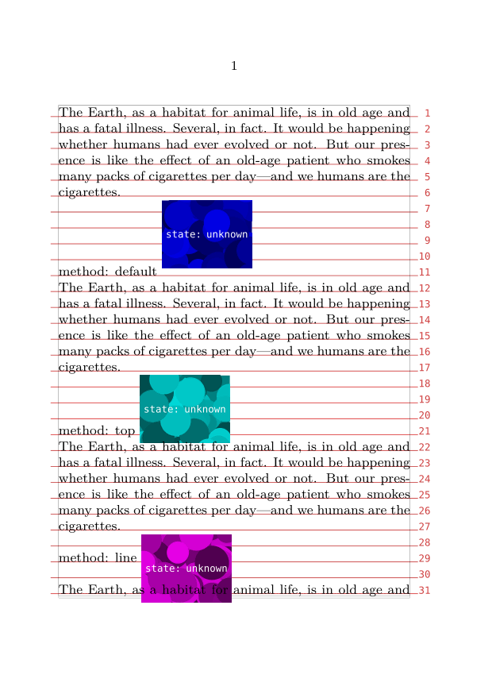

Contents
Summary
The command \snaptogrid is used for moving elements in grid mode.
Settings
| \snaptogrid[...]\command{...} | |
| [...] | normal standard yes strict tolerant top bottom both broad fit first last high one low none line strut box min max middle math math:line math:halfline math:-line math:-halfline name |
| \command | csname |
| {...} | content |
| Option | Explanation |
|---|---|
| \command | \{h,v}box |
Settings list
| \snaptogrid[...,...]\command{...} | |
| [...,...] | inherits from \definegridsnapping |
| \command | csname |
| {...} | content |
| Option | Explanation |
|---|---|
| \command | \{h,v}box |
Description
Adjust the placement of a box on the grid.
The mandatory argument is an explicit TeX box; box registers defined by \newbox will not work. That leaves \hbox:
\snaptogrid \hbox \bgroup content that should be grid aligned \egroup
and \vbox:
\snaptogrid \vbox {\externalfigure [cow]}
The optional first argument determines the snap method which can be one of the following:
| Argument | Description |
|---|---|
| normal | height: rounded up; depth: rounded up; enlarge by line height and depth |
| standard | synonym for normal
|
| yes | synonym for normal
|
| strict | height: rounded up to 0.8 times the line height; depth: rounded up to 0.8times the line height; enlarge by line height and depth |
| tolerant | height: rounded up to 1.2 times the line height; depth: rounded up to 1.2 times the line height; enlarge by line height and depth |
| top | height: rounded down; depth: rounded up; enlarge by line height and depth |
| bottom | height: rounded up; depth: rounded down; enlarge by line height and depth |
| both | height: rounded down; depth: rounded down; enlarge by line height and depth |
| broad | height: rounded up; depth: rounded up; enlarge by line height and depth; snap height and depth reduced by 0.8 |
| fit | height: rounded up; depth: rounded up; enlarge by line height and depth; snap height and depth reduced by 1.2 |
| first | align to top line |
| last | align to bottom line |
| high | height: rounded down; depth: rounded up; don’t enlarge |
| one | height: rounded down; depth: rounded down |
| low | height: rounded up; depth: rounded down; don’t enlarge |
| none | don’t enlarge |
| line | enlarge both height and depth by one line depth |
| strut | enlarge by height and depth (default) |
| max | synonym for normal
|
| min | synonym for both
|
| middle | height: rounded up; depth: rounded up |
Where snap height and snap depth are the dimensions \globalbodyfontstrutheight and \globalbodyfontstrutdepth, respectively.
Examples
Example 1
-
\useMPlibrary [dum] \setuppapersize [A6] \showgrid \setuplayout [grid=yes] %% set the global snap method \def \makedummy { %% create a dummy figure with a vsize that is not a multiple of the %% leading \externalfigure [dummy] [height=\dimexpr4.25\lineheight]% } \starttext \input ward \par method: default \snaptogrid\vbox{\makedummy} \par \input ward \par method: top \snaptogrid [top] \vbox{\makedummy} \par \input ward \par method: line \snaptogrid [line] \vbox{\makedummy} \par \input ward \par \stoptext
... yields ...
- 
Notes
See also
- \definegridsnapping
- spac-ver.mkiv The page builder
- \setuplayout
- \startlinecorrection
- Document layout and layers/Grid typesetting
- space-ver.lua The page builder
- spac-grd.mkiv Line correction macros
- \placeongrid
- http://www.pragma-ade.nl/general/manuals/details.pdf It’s in the Details, by Hans Hagen